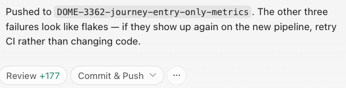

With 85% fewer flaky tests.
Building quality software with agents.
Rocky Warren · Senior Staff Engineer, Clipboard
Founding Advisor, Warren Park
rocky.dev / github.com/therockstorm
Groundcrew drains it.
Flaky tests are one example. There are more.
Chad sent me this screenshot after our call.

to fix one properly
actually get fixed
Across 50+ repos, this compounds. Each flaky test lies to humans and agents trying to iterate against them.
Point groundcrew at your task tracker.
agent-claude / agent-codex labels route each task.
One sandboxed worktree + terminal pane per task.
The real claude / codex CLI, watchable live.
PR-ready branch, CI green, ready for review.
The task description is the agent prompt. Groundcrew supports Linear, local files, and other sources with adapters.
Feed task sources from e.g., GitHub Action, Slack reaction, Datadog webhook, in-app bug-report widget.
If it creates a task, groundcrew works it.
Fix flaky UserService.findByEmail timeout
repo: backend-api
file: src/user.service.spec.ts:142
error: Async callback not invoked within 5000ms
failures: 7 in last 24h
fingerprint: a3f9c12e8b47
Add rate-limit header to /shifts endpoint
priority: high
ticket: FLAKE-4421
label: agent-anyTwo HOLD points — everything else is automated. I handle judgment calls, not routine.
# Query Datadog CI Tests API for known flakes
pup cicd tests search \
--query '@test.status:fail @test.known_flaky:true \
--from=1h --limit=50 \
| jq '[.data[].attributes.attributes | {
repo: .git.repository.name,
test: .test.name,
file: "\(.test.source.file):\(.test.source.start)",
error: .error.message
}] | group_by(.test, .file)'groundcrew runs /flaky-test-debugger in plan mode first. The agent diagnoses the test, proposes a fix strategy, and creates a fix ticket.
I read the plan. If the root cause and fix look right, I set it to Todo. Then groundcrew implements.
Plan: Fix UserService.findByEmail
Root cause:
No database cleanup between tests.
test_a creates user@test.com.
test_b queries same email,
finds unexpected record, fails.
Proposed fix:
1. Add afterEach cleanup block
2. Use UUID suffix per test email
3. Verify with --runInBand locally
Estimated change: ~8 lines
Confidence: highEach task gets an isolated git worktree. Agents run in Docker or Safehouse sandboxes.
Auto mode (Claude Code) and Codex's equivalent run without permission prompts, enabling autonomous agents.
Detection → Fix
Feature Work
At Scale
groundcrew parallelizes work that would otherwise serialize through your team. One worktree per task.
PRs I shipped in 30 days,
none hand-written
reduction in flaky tests
on main
deploys per engineer
after agents
The 85% came from running this pipeline systematically for 30 days.
Groundcrew drains it. Jira, Linear, or a text file. Open source, MIT. Runs on your machine with your tools.
$ npm install -g @clipboard-health/groundcrew@latest
github.com/ClipboardHealth/groundcrew
rocky.dev · github.com/therockstorm
PRs welcome.